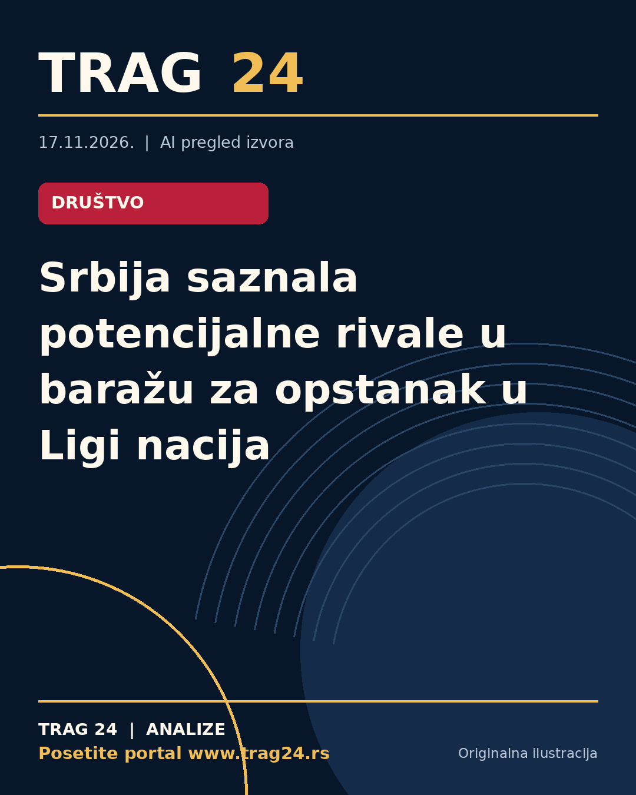

Srbija saznala potencijalne rivale u baražu za opstanak u Ligi nacija

ŠTA SE DOGODILO
Fudbalska reprezentacija Srbije završila je takmičenje u elitnoj diviziji Lige nacija bez osvojenog boda, ali je, zahvaljujući pozitivnoj gol-razlici u odnosu na druge selekcije, izborila mesto u baražu za opstanak. Sada su objavljena imena potencijalnih rivala koje Srbija može dobiti u baražu za ostanak u A diviziji ovog takmičenja.
HRONOLOGIJA
Takmičenje u grupi A2 Srbije okončano je porazima od Nemačke, Holandije i Grčke, što je dovelo do plasmana bez bodova i gol-razlike 4:12. Ipak, zahvaljujući tome što su druge selekcije – Turska i Češka – imale lošiji skor, Srbija je obezbedila učešće u baražu. Potencijalni rivali Srbije u baražu su drugoplasirane selekcije iz B divizije koje su to mesto osvojile tokom istoimene faze i to: Bosna i Hercegovina, Mađarska, Republika Irska i Slovenija. Žreb se očekuje u Nionu, 18. novembra u 12 časova, a dvomeče baraža odigraće se od 25. do 30. marta 2027. godine, sa prvim mečem kao gost i revanšem na domaćem terenu.
ŠTA NAVODE IZVORI
Izvesno je da je Srbija u teškoj situaciji s obzirom na loš učinak tokom Lige nacija. Izvor Novosti navodi da „Orlove čeka pakao“ i da su svoje mesto u baražu izborili „pukom srećom“, dok Telegraf uz podsećanje na neuspehe ukazuje da reprezentacija nije zaslužila baraž svojim igrama, ali da će imati priliku za popravni. Izvor Nova.rs prenosi konkretne informacije o potencijalnim rivalima i datumima odigravanja baraža. Svi izvori slažu se da su potencijalni rivali selekcije Bosne i Hercegovine, Mađarske, Republike Irske i Slovenije.
ŠTA JE POTVRĐENO
Potvrđeno je da su potencijalni protivnici Srbije u baražu reprezentacije Bosne i Hercegovine, Mađarske, Republike Irske i Slovenije, koje su zauzele druga mesta u grupama B divizije. Srbija je izborila baraž za opstanak u A diviziji Lige nacija. Datum žreba je zakazan za 18. novembar u Nionu, dok su dvomeče baraža predviđene za kraj marta 2027. godine. Takođe je potvrđeno da je Srbija u grupnoj fazi Lige nacija A2 izgubila sve utakmice, ali se ipak nalazi u baražu zahvaljujući gol-razlici.
ŠTA NIJE POTVRĐENO
Precizan protivnik Srbije za baraž još nije poznat jer će biti određen na žrebu, pa se ne zna sa kojom od navedenih selekcija će Srbija igrati. Takođe nije poznato gde će se tačno igrati drugi meč baraža, osim što se navodi da će prva utakmica biti kao gost, a druga kao domaćin. Nema potvrde o tome kakav je dalji sportski i takmičarski plan Srbije nakon baraža.
ŠTA OSTАJE OTVORENO: Ostaje nepoznato kako će se Srbija pripremati za baraž i koji će igrači biti u sastavu. Takođe je otvoreno pitanje potencijalnog uspeha ili neuspeha u baražu, kao i sled takmičarskih događaja u zavisnosti od ishoda baraža. Za sada nema zvaničnih informacija o mogućim taktičkim ili kadrovskim promenama, niti o potencijalnim rivalima u slučaju pobede ili poraza.
Izvori
- https://www.novosti.rs/sport/fudbal/1672249/fudbalska-reprezentacija-srbije-protivnici-baraz-liga-nacija-portugalci-pobedili-bez-ronalda-haland-vodio-norvesku-pobede
- https://nova.rs/sport/fudbal/sada-je-sve-jasno-srbija-saznala-potencijalne-rivale-u-barazu-lige-nacija/
- https://www.telegraf.rs/sport/fudbal/4434969-srbija-i-veljko-paunovic-saznali-sve-rivale-u-barazu-za-ligu-nacija-orlovi-cekaju-regionalni-derbi
Ova analiza je pripremljena uz pomoć veštačke inteligencije na osnovu javno dostupnih izvora. Navodi izvora nisu nužno nezavisno potvrđeni.